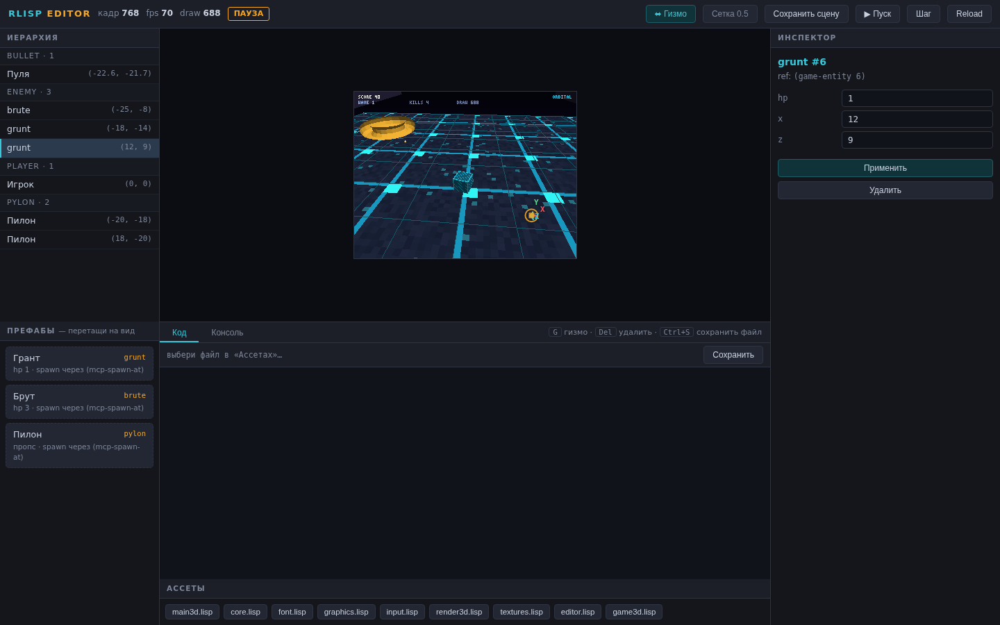
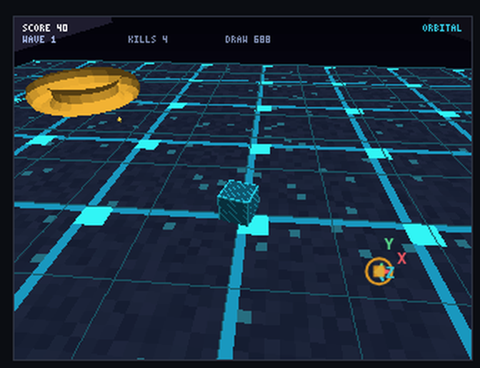
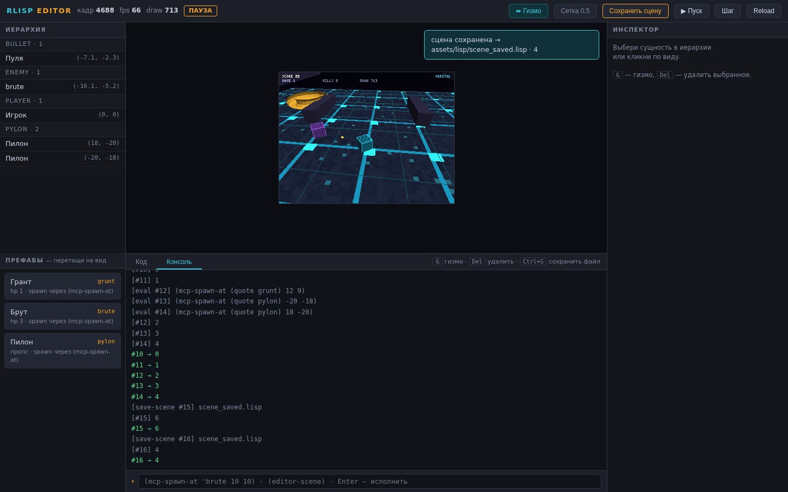

Игровой движок как Lisp-машина: Rust только как HAL, всё остальное — DSL.
Открыть репозиторий →T&L, z-буфер, перспектива-корректные текстуры (свой PNG-декодер с полным inflate), батч-вершинник: сотни объектов одним draw call (~3× против по-объектных вызовов).
Иерархия сцены, инспектор, живой вид (PNG-стрим), REPL, редактор ассетов с hot reload — весь UI общается с движком через Lisp. Этап 6: гизмо X/Y/Z двигают сущности в живой игре, drag-n-drop префабов, «Сохранить сцену» → Lisp-файл.
Model Context Protocol (JSON-RPC 2.0, stdio): ИИ-агент видит сцену, спавнит сущности, исполняет Lisp, шагает симуляцию и получает скриншоты.
HAL, интерпретатор, SIMD и PNG-писатель написаны с нуля. Дефолтная сборка не тянет ни одного крейта; wgpu — опциональная фича, не ломающая это правило.
git clone https://github.com/kostyk348/rlisp-engine && cd rlisp-engine
cargo build --release
# 3D-демо «ORBITAL» (кадры PNG без экрана)
./target/release/rlisp-engine --script assets/lisp/main3d.lisp \
--capture demo/frames3d --every 12 --frames 240 --fast
# Редактор в браузере # MCP-сервер для ИИ-агента
./target/release/rlisp-engine --serve --port 7300 --script assets/lisp/main3d.lisp
./target/release/rlisp-engine --mcp --script assets/lisp/main3d.lisp
Реальные скриншоты живого редактора (headless-браузер поверх --serve, 3D-игра «ORBITAL» работает в фоне).

Полный вид: иерархия, префабы, живой кадр, инспектор выбранного врага

Гизмо X/Y/Z над выбранной сущностью: тяга оси двигает её в живой игре

«Сохранить сцену» → assets/lisp/scene_saved.lisp, тост подтверждает
| Этап | Содержание | Критерий | Статус |
|---|---|---|---|
| 1 | wgpu за фасадом HAL, менеджер GPU-ресурсов, профилирование--wgpu · 100 reload без роста памяти | частично | |
| 2 | Полноценный Lisp: cons рядом с Vec, tracing-GC, потоки(cons 1 2) · 1000 циклов замыканий · MCP не крашит игру | реализовано | |
| 3 | JIT (copy-and-patch), SIMD-токенизатор, деоптимизацияeval ≥5× (49× ✓) · парсер ≥3× (1.07× ✗) · property-тесты ✓ | частично | |
| 4 | Фоновый MCP: канал MCP↔игра, resources, скриншоты + профайлерAI делает 100 шагов и итерирует в замкнутом цикле | частично | |
| 5 | Демо: 3D-игра на wgpu (5–10 мин), 2D «Выживание», гифки + benchmark.mdпосторонний играет 5 минут без падений | частично | |
| 6 | Редактор: gizmo-манипуляторы, drag-n-drop префабов, сохранение сцены в Lispсцену можно собрать мышкой и сохранить в .lisp | реализовано | |
| 7 | Графика v2: материалы — alpha-test, блик Blinn-Phong, тайлинг UV, туманматериалы в 3D-конвейере + Lisp-слой defmaterial/use-material! | частично | |
| 8 | wasm-таргет, мобильный таргет, fallback SIMDодна .lisp-сцена работает на десктопе и в браузере | план |